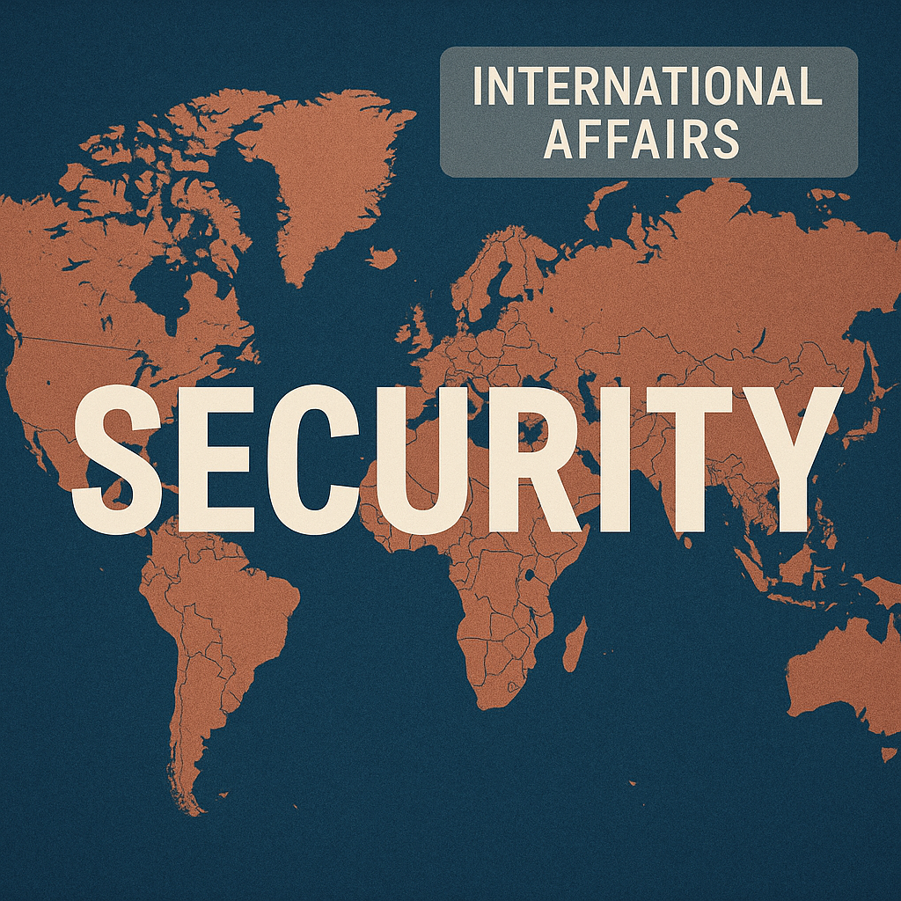

2026-03-12

### ① 今起きていること
イランの新最高指導者、モジタバ・ハメネイは就任後初の声明で、ストレート・オブ・ホルムズ（ホルムズ海峡）を封鎖する意向を示しました。さらに、地域にある米軍基地を引き続き標的にすることも明言しています。ホルムズ海峡は世界の原油輸送の重要なシーレーンであり、この発言は中東の地政学的緊張を一層高めています。
### ② 日本への影響
ホルムズ海峡は日本のエネルギー安全保障に極めて重要な通航路であり、日本の原油輸入の大部分がここを経由しています。イランによる封鎖や米軍基地への攻撃が実行されれば、原油供給が不安定化し、燃料価格の急騰や物流への影響が懸念されます。結果として日本の経済活動や生活コストに大きな影響が及ぶ恐れがあります。
### ③ 今後どうなるか
アメリカや国際社会はイランの挑発的な動きに対し強く反発する可能性が高く、地域での軍事的緊張はさらに激化すると予想されます。ホルムズ海峡の封鎖リスクは断続的に続き、局地的な衝突や紛争の拡大も懸念されます。外交的な緊張緩和策が模索されるものの、対立の根深さから短期的な解決は難しいでしょう。
### ④ 日本の対策
日本政府はエネルギーの多様化を一層推進し、中東依存のリスク低減を図る必要があります。また、米国や同盟国と連携し、地域の安定化に貢献する外交努力やインテリジェンスの強化も重要です。緊急時の備蓄体制や代替ルート確保も鍵となるでしょう。さらに、自衛隊の能力強化や海上安全保障に向けた体制整備も議論されるべきです。
### ⑤ なぜ起きたのか
モジタバ・ハメネイの声明は、米国を中心とした制裁や軍事プレゼンスへの反発を背景にしています。イランはホルムズ海峡の制御を地域戦略の一環とし、政治的圧力や軍事的抑止力を強化しようとしているのです。加えて、イラン国内政治の変動や、強硬派の力が増したこともこの声明の背景にあります。
### ⑥ 未来シナリオ
・楽観シナリオ：国際的な外交対話や多国間交渉が進展し、イランの挑発的な行動が抑制され、ホルムズ海峡の通行は安定を取り戻す。日本はエネルギー多様化を実現し、リスクを最小化。
・悲観シナリオ：イランが実際に海峡封鎖に踏み切り、米国や同盟国と軍事衝突が発生。原油価格が高騰し世界経済に深刻な打撃。日本国内でも経済混乱や物価高騰が広がる。
・現状維持シナリオ：断続的な緊張状態が続くものの全面的な封鎖や大規模な衝突には至らず、限定的な軍事衝突や外交圧力が続く。
---
### 参考情報
- ストレート・オブ・ホルムズは世界の原油輸送量の約20％が通過する戦略的海峡。
- イランは過去にもホルムズ海峡封鎖の可能性を示唆しており、地域の安定化には多国間の外交努力が不可欠。
- 米イラン関係は約40年にわたる緊張状態にあり、核合意（JCPOA）問題も絡み複雑な背景を持つ。